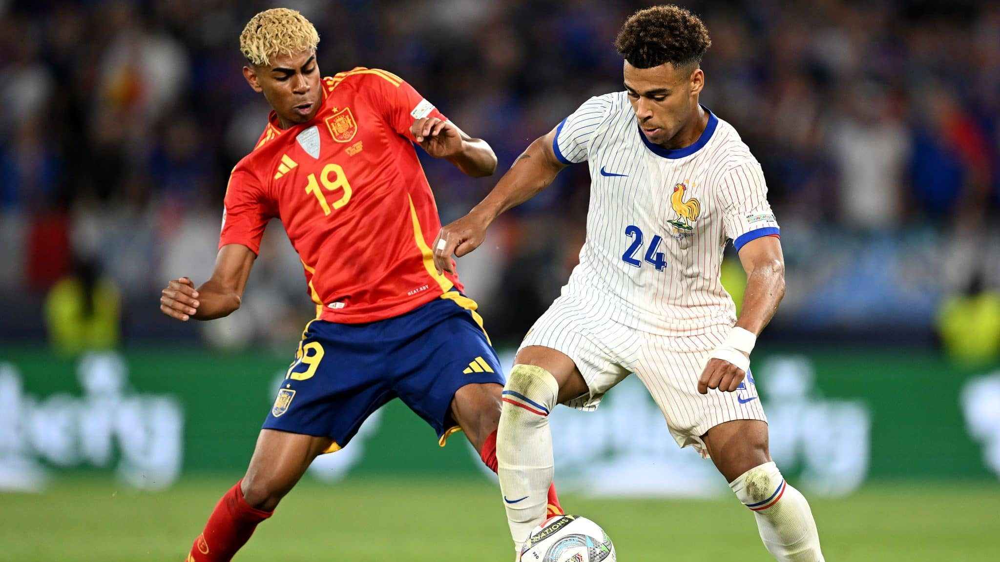
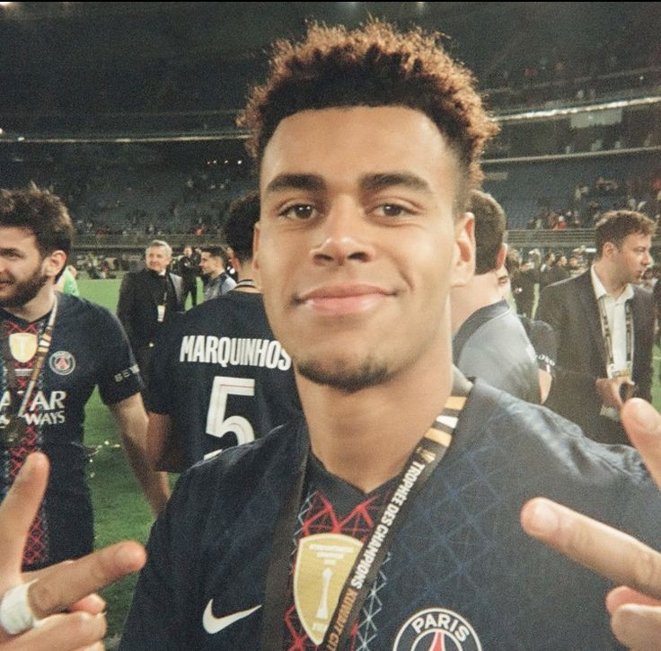

.jpg)
Nesse site vou falar sobre o garoto de 20 anos frances que joga no psg e que ganhou duas champions seguidas uma fazendo 2 gols e 1 assistência e logo 1 ano depois ganhou outra champions com 20 anos. E também sendo um dos protagonistas do time do psg sendo a primeira temporada no time com dembele, que foi melhor do mundo kivaratskhelia, vitinha, hakimi, nunu mendes, donnaruma, marquinhos, etc; e Desiré Doué fazendo 15 gols e ganhou a champions league e na temporada 25/26 também marcou 15 gols de novo sendo protagonista, praticamente com o mesmo time da ultima temporada só mudou o goleiro e até agora Desiré Doué tem 1 Golden Boy 2025, Jovem Jogador da Época da UEFA Champions League: 2024–25, Jogador Jovem da temporada da Ligue 1: 2024–25 e 2025–26, Globe Soccer Awards (Jogador Emergente): 2025, Seleção Mundial Juvenil Sub-20 (IFFHS): 2025,Time do Ano da Ligue 1: 2024–25, Jogador do Mês da Ligue 1: Março de 2025, e tambem melhor jogador jovem do mundial; Prêmios Coletivos,Liga dos Campeões da UEFA (2024–25 e 2025–26): Bicampeão europeu pelo Paris Saint-Germain, Ligue 1: Campeão francês pelo PSG, Supercopa da França, Copa da França, Supercopa da UEFA, Seleção Francesa (Sub-21 e Seleção Principal): Medalha de prata nos Jogos Olímpicos de Paris (2024) e Medalha de bronze na UEFA Nations League. E ele é comparado com vários jogadores craques como,

